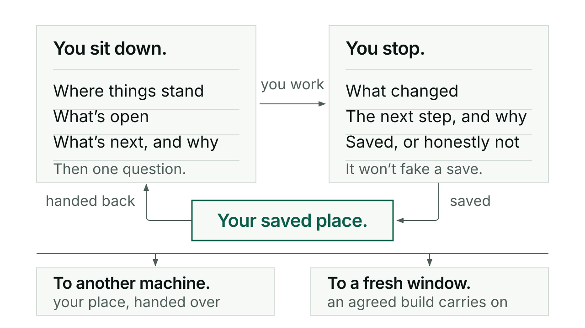
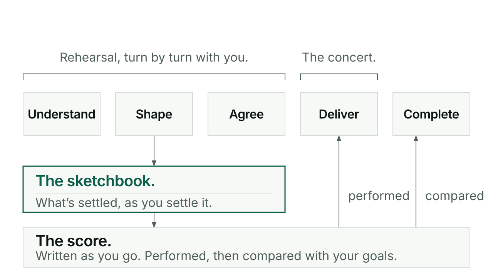
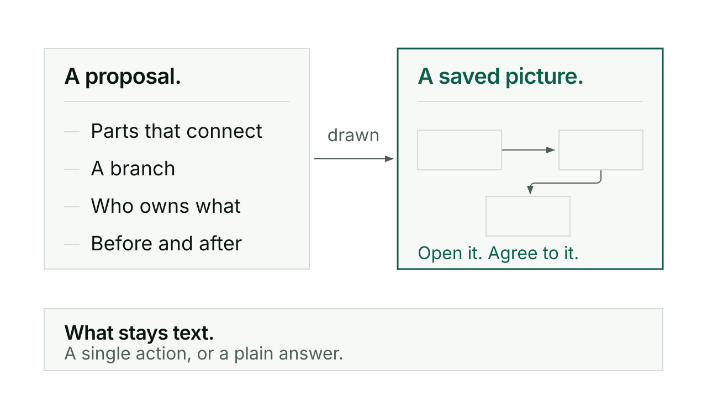
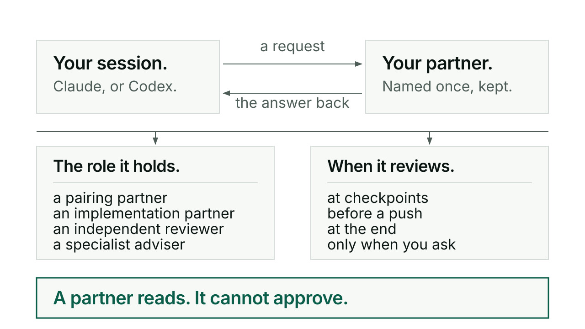
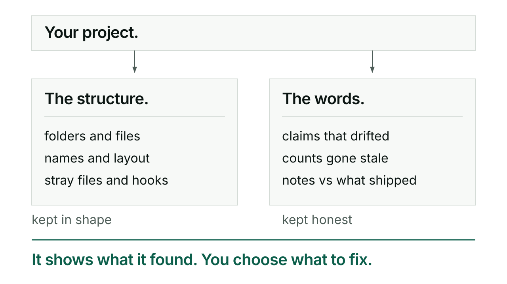
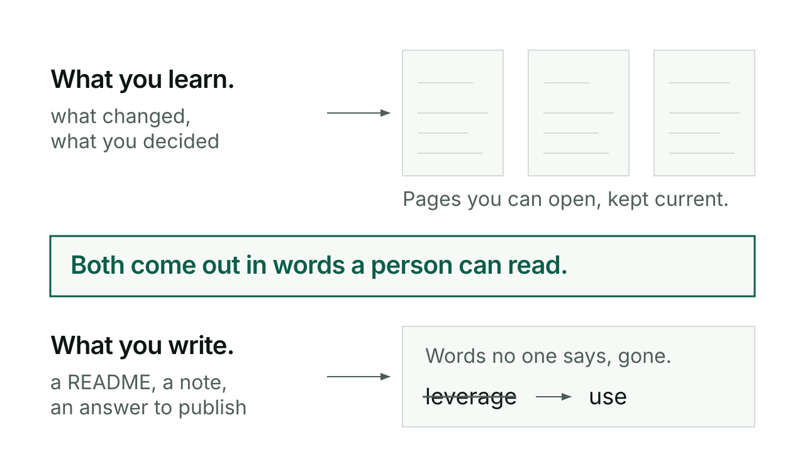

Every capability, in detail.
Six capabilities, in plain words. Each one has a guide.
Put work down and pick it up exactly where you left it.
Every new chat starts from nothing, and you re-explain. With Kerd you sit down, and it tells you where things stand, what is open, and the one thing it would do next and why. On this machine or another.
This is Switch.

Shape a piece of work, agree it, and have it performed.
The AI starts building before either of you knows what “done” means. With Kerd you rehearse: work it through turn by turn, still delivering as you go, while it keeps a sketchbook of what is settled and draws pictures you can agree to. Once you are ready, the work is written as a score and performed as a concert.
This is Conductor.

See it: pictures of what you are making, as you go.
Visuals draws the thing you are discussing: how the parts connect, who owns what, what changes between before and after. It makes a saved picture you can open, and one arrives by default whenever a proposal has connected parts, with no question asking whether you want it.
This is Visuals.

Get a second opinion from another AI session, Claude or Codex.
Agent gets a contribution from another AI session and brings the answer back: Claude asking Codex, Codex asking Claude, or either one asking a session that already has the context you need. It keeps track of which session is which, so “ask Codex to review this” reaches the partner you paired with.
This is Agent.

Keep the project tidy and catch what has drifted.
Tend keeps a repo's structure and plumbing in shape: directories, config files, naming, stray files, the hooks. Slainte keeps the content honest: whether a doc's claims still match the code, whether a count is stale, whether the release notes describe what actually shipped. Reach for tend on a new repo or after a Kerd update; reach for slainte to check a doc against the project, on demand or automatically at a release.
This is Tend and Slainte.

Keep what you learn, and write like a person.
Kivna keeps what you learn about a project in a human-readable Obsidian vault, updated in place rather than piled up in dated logs. Skriv keeps your writing sounding like a person wrote it, checking prose against a kill list of words no one actually says. Reach for kivna at a natural breakpoint, after finishing a task or when something important gets decided; reach for skriv whenever a piece of prose needs to read like someone who has actually been in the room wrote it.
This is Kivna and Skriv.
